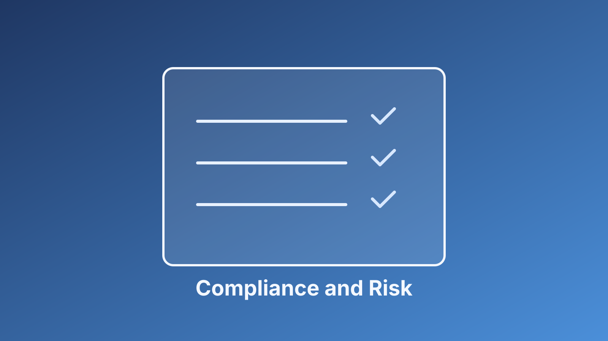

Evidence Should Answer a Leadership Question
In operations reviews, I ask every control owner the same thing: what decision does this evidence support? If the answer is unclear, the artifact is probably busywork. Useful evidence should reveal control performance, ownership gaps, or remediation urgency.
This is consistent with the governance intent behind NIST CSF: controls are not just checklist items, they are mechanisms for managing risk. Once teams connect evidence to decisions, compliance meetings become much more actionable.
Use Cadence and Ownership to Keep Momentum
I recommend monthly control reviews with named owners, aging metrics for open gaps, and clear escalation for unresolved issues. This creates operational rhythm and avoids the last-minute scramble that burns time before audits.
At Shield Technologies, this cadence helped us prioritize remediation in Titan roadmap planning without slowing delivery. The main takeaway is practical: compliance can either be paperwork or it can be a leadership tool. The difference is whether evidence is tied to ownership, timing, and a real business decision.
I also recommend publishing a short monthly control health summary for cross-functional leaders. It improves accountability, keeps risk language consistent, and helps teams align remediation work with business priorities before issues escalate.